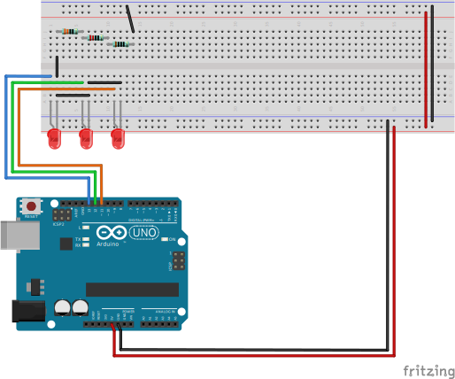

The images above are my schematic for assignment 1. There are 3 LEDs, their positive nodes are connected to pin 13, 12, and 11 of the Arduino.
Their negative nodes are connected together and connected with a 330 ohm, 220 ohm, and 100 ohm resistors in series. Then the resistor is connected to the ground on the Arduino board.
Why 330, 220, and 100?
From data sheet we know that LED have a working current of 20mA. When Arduino's pins are acting as power, they provide 5V power.
From the equation I = V / R, we can calculate that a 250 ohm resistor is needed as a bare minimum. In order to limit the current and make the LEDs safer,
I added a 220 ohm, a 330 ohm, and a 100 ohm resistor to create a 650 ohm equivalent resistance.
Circuit
Above the blueprint
The above image shows the actual Arduino circuit build on breadboard.
Firmware
Inside the chips
bool led11 = false;
bool led12 = false;
bool led13 = false;
long prevMs[3];
char delimiter = ',';
int DEFAULT_DELAY = 1500;
int delayArr[4] = {DEFAULT_DELAY, DEFAULT_DELAY, DEFAULT_DELAY, DEFAULT_DELAY};
// Turn LED on or off based on the input delay, can blink while running other functions
// (int) ledPort - Port number that connect led port
// (int) delay - Milliseconds that
bool updateLed(int ledPort, int delay, bool ledState, int delayOn = 1000) {
long currMs = millis();
long interval = currMs - prevMs[13 - ledPort];
int delayComm = delayOn;
if (ledState) {
delayComm = delay;
}
if (interval >= delayComm) {
ledState = !ledState;
digitalWrite(ledPort, ledState);
prevMs[13 - ledPort] = currMs;
}
return ledState;
}
void setup() {
// Open serial communication with computer
Serial.begin(115200);
pinMode(11, OUTPUT);
pinMode(12, OUTPUT);
pinMode(13, OUTPUT);
}
void loop() {
// If there's any text send by the computer, enter the "if" condition
if (Serial.available() > 0) {
Serial.println("Serial Available");
// Access and store the received string
String inputStr = Serial.readString();
String token = inputStr;
// Ready to extract delay time from string
int inputDelay = DEFAULT_DELAY;
int i = 0;
// while there are still delay times to be extracted ("," presents)
while (inputStr.indexOf(delimiter) >= 0) {
// Extract from the start to the first ","
token = inputStr.substring(0, inputStr.indexOf(delimiter));
// Delete what's extracted and the ","
inputStr = inputStr.substring(inputStr.indexOf(delimiter) + 1);
// Delete any space
inputStr.trim();
// Convert to int
inputDelay = token.toInt();
Serial.println(token);
// Store delay time into array
delayArr[i] = inputDelay;
//iterate
i++;
delay(1000);
}
Serial.println(inputStr);
inputDelay = inputStr.toInt();
delayArr[i] = inputDelay;
}
// led 13 is always blinking at 1000ms
// led 12 and 11 blinks at 1000ms at first, when string is received, arduino parses the first four numbers
// and use them as led on & off delay
led13 = updateLed(13, DEFAULT_DELAY, led13, DEFAULT_DELAY);
led12 = updateLed(12, delayArr[0], led12, delayArr[1]);
led11 = updateLed(11, delayArr[2], led11, delayArr[3]);
}
Actual Operation
Coming alive
The above gif shows how this program run, when the user enters up to 4 numbers, a1, a2, a3, a4, the LEDs flash at different rates.
-
LED 13 (top yellow LED) acts as a standard beacon, it always flashes at 1000 milliseconds
-
LED 12 (middle red LED) lights up for a1 milliseconds and remains dark for a2 milliseconds
-
LED 11 (lower yellow LED) lights up for a3 milliseconds and remains dark for a4 milliseconds
.gif)